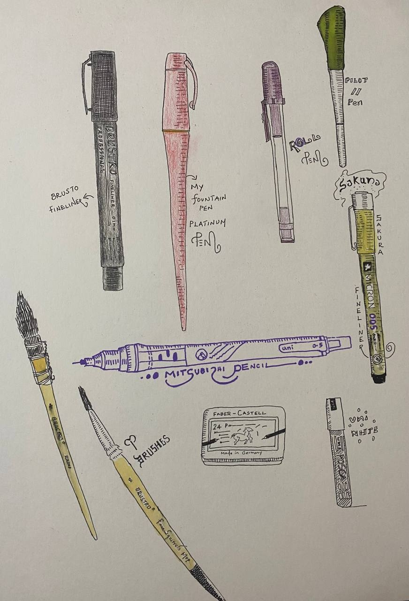
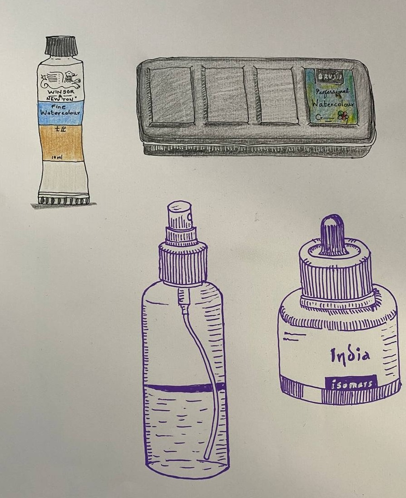
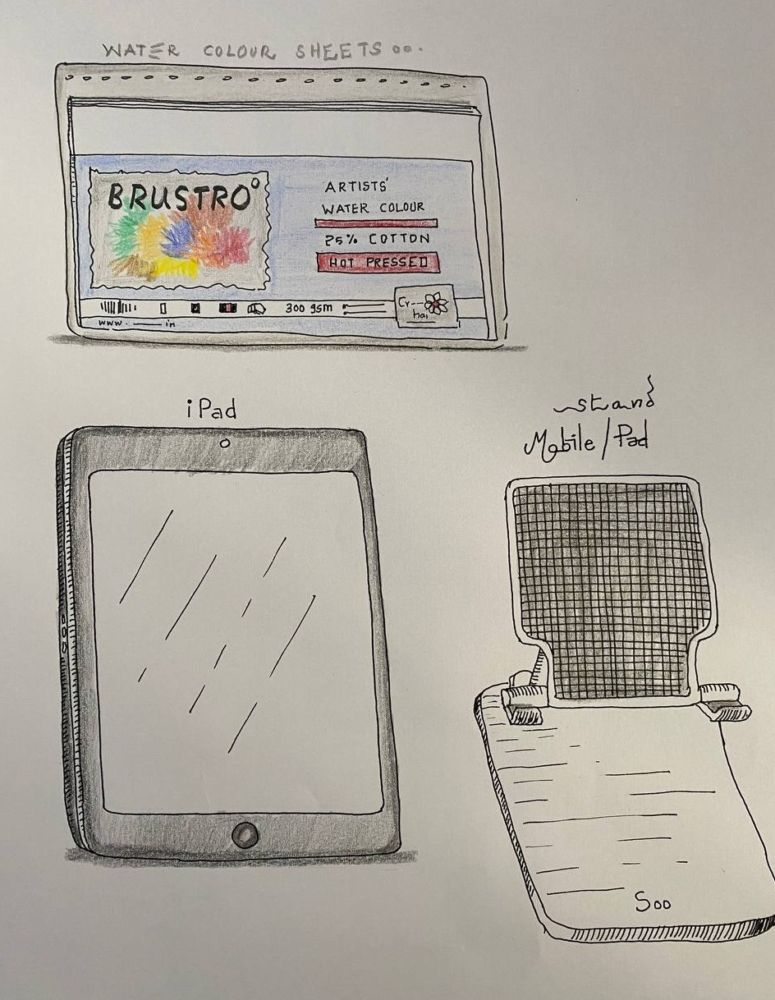

Nothing here is fancy — a small, reliable kit I keep coming back to. These are the pens, inks, pigments, pencils and papers behind the pieces on this site.
Most of the line work starts here — fineliners for control, a fountain pen when the line should breathe.

Drawn from the studio desk
Kept deliberately small — a limited palette teaches more than a big box ever will.

Colour, wash and ink
The paper matters as much as the pen — and a few extras keep the desk running.

The surface and the setup